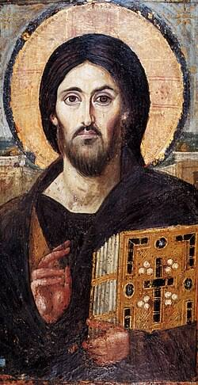

Para cuando tengas que
perdonar a alguien.
Hola, Sophi. Si llegaste a este encuentro, probablemente alguien hirió tus sentimientos.
Quizás fue una mentira.
Una traición.
Un abandono.
Una injusticia.
Si es así, quiero decirte algo importante antes de continuar:
Dios nunca te pide que llames bueno a lo que fue malo. Tampoco que olvides lo que pasó. Y tampoco que ignores la injusticia.
El verdadero perdón no empieza sino por reconocer la herida. Enfrentándola con el dolor que esto significa.
Muchas veces, si esa herida permanece mucho tiempo sin ser entregada a Dios, fácilmente puede transformarse en ira, resentimiento e incluso deseos de venganza. Y el peso que carga uno con esos sentimientos es completamente agotador. Nos termina esclavizando.
Dios no nos creó para ser esclavos. Nos creó para ser libres.
La verdadera libertad no consiste en hacer lo que sentimos en cada momento. Consiste en poder elegir el bien incluso cuando el corazón nos empuja en otra dirección.
Por eso quiero hablarte con la verdad en este encuentro. Porque el mismo Cristo dijo:
«Y conoceréis la verdad, y la verdad os hará libres.»Así que no te hablaré de la persona que te hirió.
Te hablaré de ti.
Pues tú no puedes decidir por quien te hirió, pero sí puedes decidir cómo responderás delante de Dios.
venganza
Toca cada piedra para soltarla
«Padre, perdónalos,
porque no saben lo que hacen.»
Perdonar nunca ha sido decir que no dolió.
Perdonar tampoco es volver a confiar inmediatamente. Y muchas veces tampoco significa reconciliarse inmediatamente.
Hay heridas que exigen distancia. Hay injusticias que deben repararse. Hay delitos que deben denunciarse.
El perdón cristiano no elimina la justicia. La purifica.
Perdonar significa algo mucho más profundo: renunciar a que el odio tenga la última palabra sobre tu corazón.
Porque cuando Cristo nos mandó perdonar, no estaba defendiendo a quienes hacen el mal. Estaba defendiendo el corazón de quienes lo sufren.
El único hombre que podía exigir justicia perfecta
eligió ofrecer misericordia perfecta.
33 d.C.

Cristo
Toca para conocer su historia
Desde la cruz, perdonó a quienes lo crucificaban.
~36 d.C.

San Esteban
Toca para conocer su historia
Mientras lo apedreaban, perdonó a sus asesinos como Cristo lo hizo.
1902

Santa María Goretti
Toca para conocer su historia
A sus once años, le ofreció el perdón al hombre que la hirió de muerte.
1983
San Juan Pablo II
Toca para conocer su historia
Fue a la cárcel a dar personalmente el perdón al hombre que intentó matarlo.
2019
Brandt Jean
Toca para conocer su historia
Joven fue al juicio de la asesina de su hermano y la perdonó.
Hoy

Sophi
Toca para continuar
¿A quién Dios te está dando la oportunidad de perdonar hoy?
Oremos
†
Oración por el perdón
Señor,
Tú conoces las heridas que todavía guardo en mi corazón.
No te pido que borres mi memoria.
Te pido que sanes aquello que aún no he sabido entregarte.
Enséñame a perdonar como Tú me perdonas.
No porque el mal haya sido pequeño,
sino porque tu misericordia es infinitamente más grande.
Haz que nunca permita que el resentimiento
ocupe el lugar que solo a Ti te pertenece.
Amén.